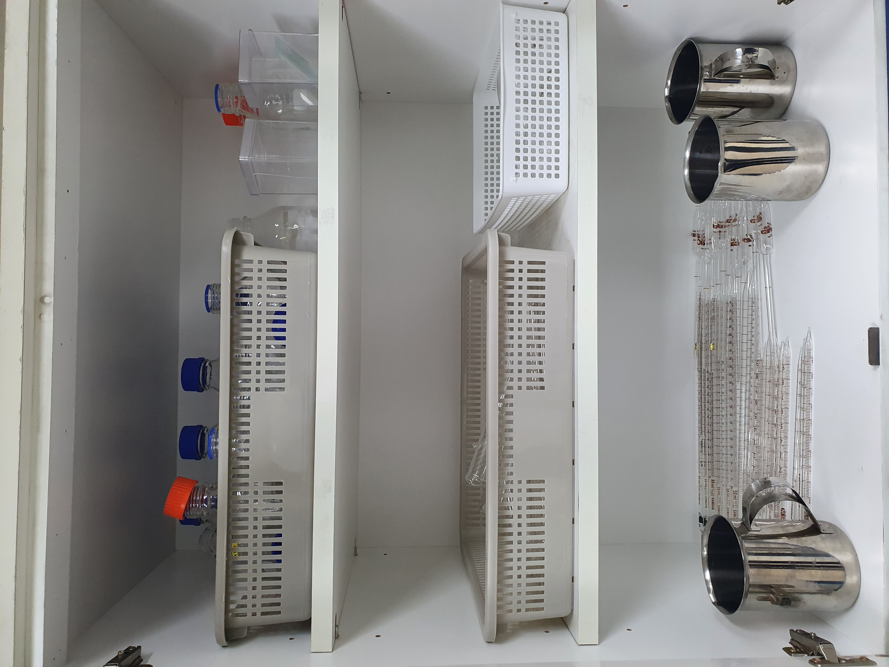
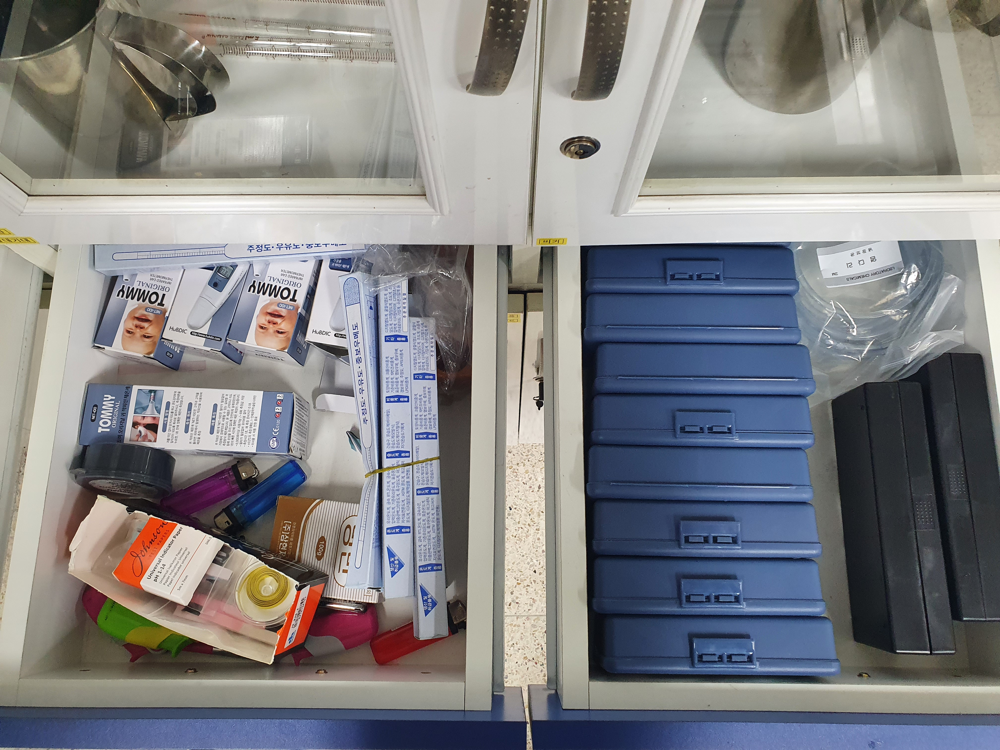
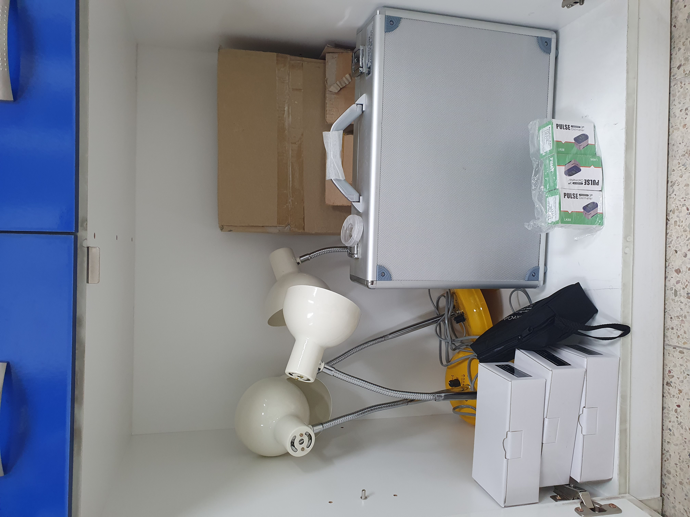

2번 윗서랍
-유자관 : U 자형으로 구부린 관. 트랩으로 한다든지, 유리의 U자관에 수은, 알코올, 물 등을 넣고 그 액주(液柱) 높이의 차에서 양단에 작용하는 압력차를 구한다.
-깔대기대 : 말 그대로 깔대기대
-비커 : 액체를 담아 반응시키기 위해 가열·냉각·교반 등의 조작을 한다. 보통 얇은 경질유리로 되어 있다. 비커는 일반적으로 원기둥 모양이며 바닥이 편평하고 위에는 물질을 부을 수 있는 주둥이가 있다. 비커는 1 밀리리터부터 최대 수 리터에 이르기까지 다양한 크기를 재는 데 이용할 수도 있다.

2번 중간서랍
-염화코발트 시험지 : 수분을 확인하기 위해 사용하는 것으로, 원래의 색은 푸른색을 띠는데 수분을 흡수하면 푸른색이 붉은색으로 변해서 수분의 유무를 확인할 수 있다.
-리트머스 시험지 : 리트머스(색소)용액을 소량의 염산 혹은 암모니아로 적색 또는 청색으로 하고 여과지의 작은 조각에 스며들게 하여 건조시켜 만든 시험지. 용액의 산성인가 알칼리성인가를 판별하는 데 사용한다. 청색 시험지는 산성 용액에서 적색으로 변하고, 적색 시험지는 알칼리 용액에서 청색을 띤다.
-토치 : 금속 따위의 절단이나 용접에 사용하는 버너. 가솔린 및 석유를 압축하거나 산소와 아세틸렌을 혼합하여 사용한다.
-체온계 : 체온을 측정하기 위하여 사용하는 온도계
-만능 pH 시험지 : 용액의 pH를 간편하게 측정하여 용액의 성질을 알아보기 위한 시험지

2번 아래서랍
-현미경 부속품 : 말그래도 현미경 부속품들
-간이가스뷰렛트 : - 기체의 체적변화 흐름을 측정하는 간이 상자형 가스 뷰렛트 / 기체가 발생 또는 흡수되는 화학반응 실험을 할 때 기체의 변화 측정을 실시간으로 간단하게 할 수 있다.